리눅스마스터-2급 (2017-12-02 기출문제)
1과목: 리눅스 운영 및 관리
1. 다음 설명과 같은 상황에서 가장 필요한 설정으로 알맞은 것은?
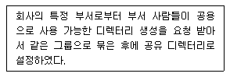
- Set-UID
- Set-GID
- Sticky-Bit
- Disk Quota
(정답률: 57%)

2. 다음 ( 괄호) 안에 들어갈 내용으로 알맞은 것은?
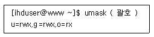
- -s
- -S
- -l
- -L
(정답률: 71%)
3. 다음은 data 디렉터리의 파일 및 하위디렉터리를 포함하여 소유권을 ihduser로 변경하는 과정이다. ( 괄호 ) 안에 들어갈 내용으로 알맞은 것은?
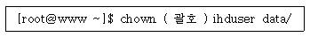
- -r
- -R
- -d
- -f
(정답률: 84%)
4. 파일의 허가권이 다음과 같다. 사용자는 읽기 및 쓰기, 그룹 및 다른 사용자는 읽기 권한만 설정 하는 명령으로 알맞은 것은?
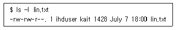
- chmod u+rw, go+r lin.txt
- .chmod 664 lin.txt
- chmod g-w lin.txt
- chmod u+rw, g+r,o+r lin.txt
(정답률: 62%)
5. 다음 중 파일의 그룹 소유권을 변경할 수 있는 명령어의 조합으로 알맞은 것은?
- chmod. chowm
- chmod, chgrp
- chown, chgrp
- chgrp, groupmod
(정답률: 77%)
6. 다음 그림과 같은 결과를 보기 위해 실행하는 명령으로 알맞은 것은?
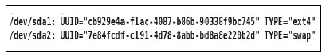
- uuid
- e2label
- blkid
- tune2fs
(정답률: 62%)
7. 다음 중 분할된 파티션별로 사용량을 확인하는 명령으로 알맞은 것은?
- df
- du
- free
- mount
(정답률: 72%)
8. 다음과 같은 경우 마운트하는 명령으로 알맞은 것은?
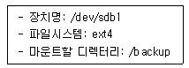
- mount /backup -t ext4 /dev/sdb1
- mount /backup -T ext4 /dev/sdb1
- mount -t ext4 /dev/sdb1 /backup
- mount -T ext4 /dev/sdb1 /backup
(정답률: 73%)
9. 다음은 CD-ROM 드라이브의 트레이(Tray)를 여는 과정이다. ( 괄호 ) 안에 들어갈 내용으로 알맞은 것은?
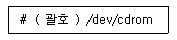
- umount
- eject
- exec
- dumpe2fs
(정답률: 80%)
10. 다음 그림은 특정 명령어의 결과이다. 해당 결과를 보기 위한 이 명령어의 옵션으로 알맞은 것은?
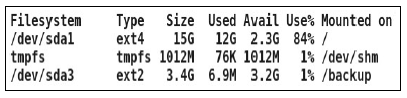
- -sh
- -sT
- -hT
- -ht
(정답률: 55%)
11. 다음 중 사용중인 셸을 bash 로 변경하는 명령으로 틀린 것은?
- chsh
- chsh -s bash
- chsh -s /bin/bash
- chsh --shell /bin/bash
(정답률: 47%)
12. 다음에서 설명하는 내용으로 알맞은 것은?
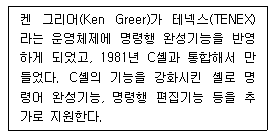
- bash
- csh
- tcsh
- ksh
(정답률: 72%)
13. 다음 중 사용 중인 셸을 확인 할 때 사용하는 명령으로 알맞은 것은?
- echo $SHELL
- chsh
- cat /etc/shells
- chsh -l
(정답률: 78%)
14. 다음 중 셸을 관한 설명중 틀린 것은?
- 유닉스 버전7의 기본셸은 스티븐 본이 개발한 본셸이다.
- 셸은 사용자로부터 명령을 받아 그것을 해석하고 프로그램을 실행한다.
- 일반적으로 사용자에게 셸을 부여하지 않으면 로그인을 막는 효과와 동일하다.
- 셸을 커널에 종속된 프로그램으로 배포판에 따라 하나의 셸만 사용한다.
(정답률: 72%)
15. 다음 중 환경변수에 관한 설명으로 틀린 것은?
- 환경변수를 이용하여 사용자별 고유한 셸 환경을 구축할 수 있다.
- 환경변수는 미리 예약된 변수명만 사용하고, bash에서는 SHELL 과 같이 대문자로 구성 되어있다.
- env 명령을 통해 전체 환경변수의 값을 확인 할 수 있다.
- 특정한 셸에서만 적용되는 변수를 말한다.
(정답률: 62%)
16. 다음 중 bash 에서 제공하는 환경변수로 틀린 것은?
- HOME
- PATH
- ROOT
- LANG
(정답률: 69%)
17. 다음 중 배시셸을 제공하는 환경변수와 설명이 알맞은 것은?
- ROOT - 사용자의 현재 작업 디렉터리
- SHELL - 사용자의 로그인 셸
- HISTNAME - 사용자 히스토리 파일명
- TERM - 사용자 로그인후 자동로그아웃 되는 시간
(정답률: 58%)
18. 배시셸의 히스토리 기능에 관한 설명으로 틀린 것은?
- history 명령으로 히스토리 리스트에 있는 명령어들을 확인할 수 있다.
- 로그아웃할 때 메모리에 기억된 명령들은 저장되지 않고 자동삭제된다.
- 사용자가 실행한 모든 명령들은 히스토리 리스트 버퍼에 스택으로 저장된다.
- 사용자가 실행한 명령은 .bash_history 라는 파일에 추가로 기록된다.
(정답률: 73%)
19. 다음 중 ( 괄호 )안에 들어갈 내용으로 알맞은 것은?
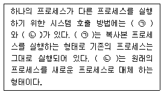
- ㉠ : fork, ㉡ : exec
- ㉠ : exec, ㉡ : fork
- ㉠ : background, ㉡ : foreground
- ㉠ : foreground, ㉡ : background
(정답률: 77%)
20. 다음 중 [CTRL] + [z] 입력 시에 전송되는 시그널로 알맞은 것은?
- SIGHUP
- SIGOUT
- SIGKILL
- SIGTSTP
(정답률: 78%)
21. 다음 명령의 결과에 실행되는 작업으로 알맞은 것은?
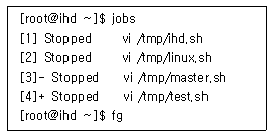
- vi /tmp/ihd.sh
- vi /tmp/linux.sh
- vi /tmp/master.sh
- vi /tmp/test.sh
(정답률: 67%)
22. 다음 중 시그널 목록을 확인 할 수 있는 명령으로 알맞은 것은?
- kill
- kill -l
- kill -p
- kill -s
(정답률: 86%)
23. 다음 중 PID가 1109인 프로세스를 종료하기 위한 명령어로 틀린 것은?(오류 신고가 접수된 문제입니다. 반드시 정답과 해설을 확인하시기 바랍니다.)
- kill -TERM 1109
- kill -15 1109
- killall -v -9 1109
- kill -s SIGTERM 1109
(정답률: 50%)
24. jobs 명령의 결과가 다음과 같은 경우 백그라운드 프로세스에서 포어그라운드 프로세스로 전환하는 명령으로 틀린 것은?(오류 신고가 접수된 문제입니다. 반드시 정답과 해설을 확인하시기 바랍니다.)
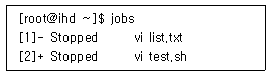
- fg
- fg 2
- fg &2
- fg %2
(정답률: 58%)
25. 다음 중 사용자가 조작하는 프로세스 우선순위 값인 NI값의 범위로 알맞은 것은?
- -19 ~ 20
- -19 ~ 19
- -20 ~ 19
- -20 ~ 20
(정답률: 76%)
26. 다음과 같은 조건으로 crontab에 등록할 때 알맞은 것은?
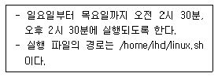
- 30 02,14 * * 0-4 /home/ihd/linux.sh
- 30 02,14 * * 1-5 /home/ihd/linux.sh
- 02,14 30 * * 0-4 /home/ihd/linux.sh
- 02,14 30 * * 1-5 /home/ihd/linux.sh
(정답률: 81%)
27. 다음 중 crontab의 내용을 화면에 출력하기 위한 옵션으로 알맞은 것은?
- -l
- -e
- -r
- -u
(정답률: 69%)
28. 다음 중 프로세스를 종료하는 방법으로 틀린 것은?
- top 실행상태에서 명령키를 이용한 프로세스 PID로 종료
- kill 명령어를 이용한 프로세스 PID로 종료
- killall 명령어를 이용한 프로세스 명으로 종료
- [CTRL] + [z] 키를 이용한 실행중인 프로세스 종료
(정답률: 72%)
29. 다음 중 emacs 편집기를 개발한 사람으로 알맞은 것은?
- 리누스 토발즈
- 빌 조이
- 리처드 스톨먼
- 브람 무레나르
(정답률: 79%)
30. 다음 중 텍스트 기반의 콘솔 창에서 사용할 수 있는 편집기로 틀린 것은?
- pico
- emacs
- gedit
- nano
(정답률: 78%)
31. 다음 그림에 해당하는 리눅스 편집기로 알맞은 것은?
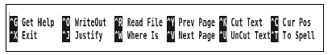
- vim
- gedit
- emacs
- nano
(정답률: 57%)
32. vi 편집기를 이용해서 lin.txt라는 파일을 수정하는 중에 비정상적으로 종료되었다. 생성된 스왑 파일을 불러온 후 작업을 끝내고 관련 파일을 삭제하려고 할 때 ( 괄호 ) 안에 들어갈 내용으로 알맞은 것은?
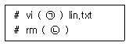
- ㉠ -r ㉡.lin.txt.swp
- ㉠ -R ㉡.lin.txt.swap
- ㉠ -s ㉡.lin.txt.swp
- ㉠ -S ㉡.lin.txt.swap
(정답률: 63%)
33. 다음 중 vi 편집기에서 삭제와 관련된 명령으로 틀린 것은?
- x
- Y
- dd
- D
(정답률: 77%)
34. 다음 중 vi 편집기로 특정 파일을 불러올 때 커서가 마지막 줄에 위치하도록 사용하는 명령으로 알맞은 것은?
- vi + joon.txt
- vi $ joon.txt
- vi -$ joon.txt
- vi % joon.txt
(정답률: 62%)
35. 다음 중 tar.gz과 같이 압축된 소스코드로 제공되는 소프트웨어를 설치하는 방법에 관한 설명으로 알맞은 것은?
- configure 작업은 사용자 환경설정이 불가능하다.
- configure - make - make install 의 작업을 거친다.
- 사용자는 주어진 소스코드를 수정하여 사용 할 수 없다.
- 소스 컴파일시 사용되는 Makw의 대체프로그램으로 RPM이 등장하였다.
(정답률: 79%)
36. 다음 중 tar 옵션과 내용의 연결로 틀린 것은?
- c : 새로운 tar파일을 생성한다.
- x : 생성된 tar파일을 풀어준다.
- r : tar 파일 내용을 역순으로 보여준다.
- t : tar 파일 안에 묶여 있는 파일의 목록을 보여준다.
(정답률: 69%)
37. 다음 중 apt-get명령으로 samba 패키지를 제거 할 때 사용하는 명령으로 알맞은 것은?
- apt-get samba remove
- apt-get remove samba
- apt-get samba delete
- apt-get delete samba
(정답률: 76%)
38. 리눅스 압축관련 유틸리티와 설명의 연결로 알맞은 것은?
- compress : LZMA2 알고리즘을 이용하여 만든 데이터 무손실 압축프로그램이다.
- gzip : 전통적으로 유닉스에서 사용해왔던 압축프로그램이나 현재는 거의 쓰이지 않는다.
- bzip2 : 블록정렬알고리즘과 허브만 부호화(Huffman coding)을 사용하여 압축률이 좋다.
- xz : DOS/Windows 계열 운영체제에서 많이 사용했던 압축프로그램이다.
(정답률: 52%)
39. RPM 제거 모드의 옵션중 의존성을 갖는 패키지가 존재하는 경우에도 삭제할 수 있는 옵션으로 알맞은 것은?
- -e
- --force
- --nodeps
- --erase
(정답률: 70%)
40. RPM에 관한 설명으로 틀린 것은?
- 설치 및 갱신, 제거, 질의 검증모드등이 있다.
- 시스템에 설치된 모든 패키지 정보를 출력할 때 사용하는 명령은 rpm -qa 이다.
- 질의모드에서 해당패키지가 설치 또는 동작시 필요한 패키지목록을 보여주는 옵션은 -p 이다.
- 검증모드에서 사용하는 기본옵션은 -V이다.
(정답률: 57%)
41. 다음 중 yum을 이용해서 telnet-server 패키지에 대한 정보를 출력하고자 할 때 사용하는 명령으로 알맞은 것은?
- list
- search
- info
- check
(정답률: 68%)
42. 설치된 패키지를 다음과 같이 사용자가 지정한 형태로 출력하려 할 때 ( 괄호 ) 안에 들어갈 내용으로 알맞은 것은?
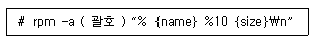
- --qf
- --qp
- --qip
- --qfp
(정답률: 45%)
43. 다음 중 리눅스 시스템에서 프린터를 사용하는 방법으로 틀린 것은?
- 패러럴 포트에서 연결해서 /dev/lp0 파일을 사용
- USB 포트에 연결해서 /dev/usb/lp0 파일을 사용
- iSCSI 포트에 연결해서 /dev/iscsi/lp0 파일로 사용
- LPRng와 같은 LPD 프로토콜 기반으로 설정해서 네트워크 프린터로 사용
(정답률: 48%)
44. 다음에서 설명하는 내용으로 알맞은 것은?
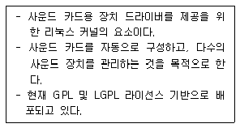
- LPRng
- SANE
- ALSA
- OSS
(정답률: 73%)
45. 다음 중 프린팅 시스템인 LPRng의 설명으로 알맞은 것은?
- 어도비의 PRD형식의 텍스트 파일을 이용하여 설정이 가능하다.
- HTTP기반의 IPP을 사용하고, SMB 프로토콜도 지원한다.
- lpadmin이라는 명령을 이용하여 웹상에서도 제어가 가능하다.
- lpr, lpq, lpstat, cancel등의 명령어를 지원한다.
(정답률: 47%)
46. sane-find-scanner 명령어를 사용해서 병렬(Parallel)포트에 연결된 스캐너만 찾으려 한다. 다음 중 해당 옵션으로 알맞은 것은? (문제 오류로 실제 시험에서는 모두 정답처리 되었습니다. 여기서는 1번을 누르면 정답 처리 됩니다.)
- -p
- -q
- -v
- -a
(정답률: 80%)
47. 다음 중 모든 인쇄 작업을 취소하는 명령어로 알맞은 것은?
- lpc
- lpq -a
- lprm -a
- cancel -a
(정답률: 59%)
48. 다음 중 커서(ncurses) 라이브러리 기반의 오디오 프로그램으로 알맞은 것은?
- alsactl
- alsamixer
- cdparanoia
- OSS/free
(정답률: 55%)
2과목: 리눅스 활용
49. 다음 설명에 해당하는 내용으로 알맞은 것은?
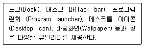
- X 프로토콜
- 데스크톱 환경
- 윈도 매니저
- 디스플레이 매니저
(정답률: 41%)
50. 다음 중 KDE에서 사용하는 라이브러리로 가장 알맞은 것은?
- Qt
- GTK+
- FLTK
- Xm
(정답률: 67%)
51. 다음 그림에 해당하는 내용으로 알맞은 것은?
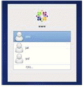
- XDM
- GDM
- KDM
- LDM
(정답률: 56%)
52. 다음 중 런 레벨 5와 가장 거리가 먼 것은?
- 디스플레이 매니저
- 데스크톱 환경
- startx
- 윈도우 매니저
(정답률: 54%)
53. 다음 설명에 해당하는 X 윈도 기반 응용프로그램으로 알맞은 것은?
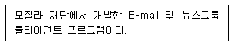
- konqueror
- kmail
- evolution
- thunderbird
(정답률: 51%)
54. 다음 설명에 해당하는 프로그램으로 알맞은 것은?
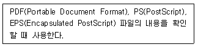
- GIMP
- totem
- evince
- gThumb
(정답률: 62%)
55. 다음 중 X 윈도우 환경에서 사용하는 파일 관리 프로그램으로 알맞은 것은?
- evolution
- nautilus
- Gwenview
- Okular
(정답률: 59%)
56. 다음 중 GNOME 프로젝트에 포함된 프로그램으로 틀린 것은?
- GIMP
- nautilus
- Gwenview
- gedit
(정답률: 45%)
57. 다음 중 OSI 7계층 모델에서 전송 계층의 데이터 전송 단위로 알맞은 것은?
- segments
- packets
- frames
- bits
(정답률: 67%)
58. 다음 설명에 해당하는 OSI 계층으로 알맞은 것은?
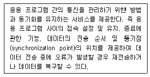
- 데이터링크 계층
- 네트워크 계층
- 전송 계층
- 세션 계층
(정답률: 52%)
59. 다음 설명에 해당하는 LAN 구성방식으로 알맞은 것은?
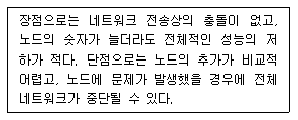
- 망(Mesh) 형
- 스타(Star) 형
- 링(Ring) 형
- 버스(Bus) 형
(정답률: 64%)
60. 다음 설명으로 알맞은 것은?
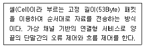
- ATM
- X.25
- DQDB
- Frame Relay
(정답률: 43%)
61. 다음 설명에 해당하는 프로토콜로 알맞은 것은?
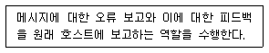
- IP
- ARP
- TCP
- ICMP
(정답률: 75%)
62. 다음 중 서비스명과 포트번호 조합으로 틀린 것은?
- POP3 - 110
- IMAP - 143
- DNS - 53
- HTTPS - 434
(정답률: 72%)
63. 다음 중 허브(HUB)와 PC 연결과 같이 일반적인 연결에 사용하는 UTP 케이블 배열로 알맞은 것은?
- 흰녹, 녹, 흰주, 파, 주, 흰파, 흰갈, 갈
- 흰주, 주, 흰녹, 녹, 파, 흰파, 흰갈, 갈
- 흰녹, 녹, 흰주, 파, 흰파, 주, 흰갈, 갈
- 흰주, 주, 흰녹, 파, 흰파, 녹, 흰갈, 갈
(정답률: 62%)
64. 다음 설명과 같은 경우에 가장 최적인 인터넷 서비스로 알맞은 것은?
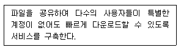
- NIS
- NFS
- FTP
- TELNET
(정답률: 52%)
65. 다음 중 메일 관련 프로토콜로 틀린 것은?
- pop3
- portmap
- imap
- smtp
(정답률: 75%)
66. 다음 중 SSH에 대한 설명으로 틀린 것은?
- 원격 셸 기능 지원
- 안전한 파일 전송 지원
- 평문 전송 기능 지원
- 원격 복사 기능 지원
(정답률: 63%)
67. 다음 중 파이어폭스 웹 브라우저를 사용하는 레이아웃 엔진으로 알맞은 것은?
- 게코(Gecko)
- 프레스토(Presto)
- 웹키트(Webkit)
- 블링크(Blink)
(정답률: 49%)
68. 다음 조건일 때 SSH 인증 파일의 경로로 알맞은 것은?
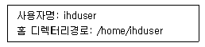
- /home/ihduser/authorized_keys
- /home/ihduser/.authorized_keys
- /home/ihduser/.ssh/authorized_keys
- /home/ihduser/ssh/.authorized_keys
(정답률: 53%)
69. telnet 명령을 이용해서 서버에 접속할 때 ihduser 계정 대신에 kait 라는 계정으로 전환하려고 한다. 다음 ( 괄호 ) 안에 들어갈 내용으로 알맞은 것은?
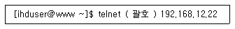
- -u kait
- -p kait
- -l kait
- -n kait
(정답률: 46%)
70. 다음과 같은 조건일 때 가장 최적인 게이트웨이 주소값으로 알맞은 것은?
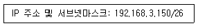
- 192.168.3.128
- 192.168.3.129
- 192.168.3.151
- 192.168.3.191
(정답률: 41%)
71. 다음 그림에 해당하는 명령으로 알맞은 것은?
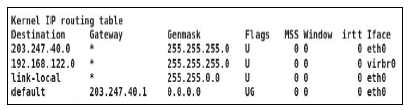
- netstat
- ss
- arp
- mii-tool
(정답률: 59%)
72. 다음 설명에 해당하는 파일로 알맞은 것은?
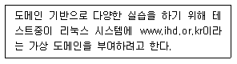
- /etc/hosts
- /etc/resolv.conf
- /etc/sysconfig/network
- /etc/sysconfig/network-scripts
(정답률: 44%)
73. 다음은 로컬 네트워크 대역에 있는 특정 시스템의 MAC 주소를 확인하는 과정이다. ( 괄호 ) 안에 들어갈 명령으로 알맞은 것은?
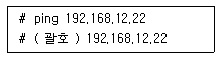
- ip
- arp
- ss
- ifconfig
(정답률: 60%)
74. 다음 중 명령어를 이용한 네트워크 인터페이스 설정과 관련된 설명으로 알맞은 것은?
- 명령어로 설정하면 즉시 반영된다.
- 재부팅해도 변경된 사항이 계속적으로 적용된다.
- 명령 실행 후 네트워크 데몬을 재시작한다.
- 네트워크 관련 파일의 내용도 같이 수정된다.
(정답률: 35%)
75. 다음 ( 괄호 ) 안에 들어갈 내용으로 알맞은 것은?
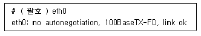
- ip
- ethtool
- mii-tool
- ifconfig
(정답률: 40%)
76. 다음 그림에 해당하는 명령으로 알맞은 것은?
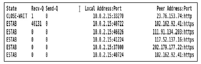
- ip
- ss
- netstat
- traceroute
(정답률: 34%)
77. 다음 중 고계산용 클러스터 기술과 가장 거리가 먼 것은?
- Backup Node
- GNU C Compiler
- PVM(Parallel Virtual Machine)
- MPI(Message Passing Interface)
(정답률: 47%)
78. 다음 중 임베디드 기술과 가장 거리가 먼 것은?
- 스마트폰
- 슈퍼컴퓨터
- IVI
- 스마트 TV
(정답률: 65%)
79. 다음 중 버추얼박스를 이용해서 가상 머신을 생성한 후에 CentOS69라는 이름으로 리눅스를 설치했을 때 생성되는 파일명으로 가장 알맞은 것은?
- CentOS69.vbox
- CentOS69.vmx
- CentOS69.vdi
- CentOS69.vmdk
(정답률: 37%)
80. 다음 중 XEN, KVM과 같은 다양한 하이퍼바이저를 통합 관리하기 위한 플랫폼으로 틀린 것은?
- Docker
- Cloudstack
- Openstack
- OpenNebula
(정답률: 53%)